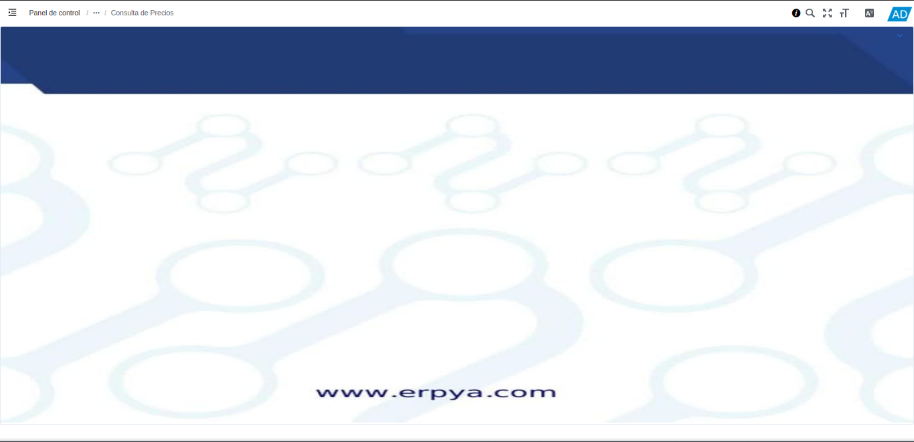
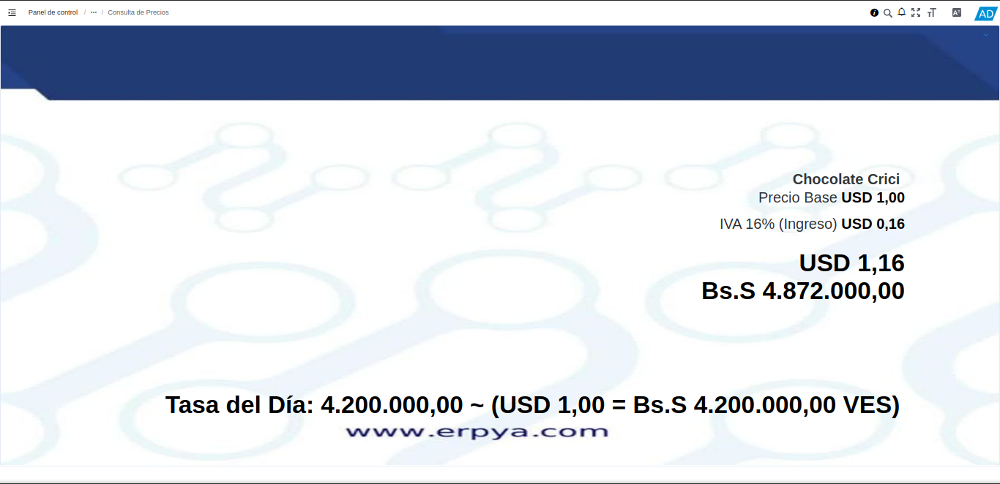

3.2. Consulta de Precios de Productos¶
ADempiere permite que sea realizada una búsqueda de precios de productos a través del código de barra del mismo, en la ventana “Consultar Precio”. Para ello, fue realizada la creación y configuración del usuario “Visor”, con la finalidad de que el mismo pueda realizar una consulta rápida de los productos con sus respectivos precios.
El visor de precios se puede configurar en moneda “VES”, para reflejar el precio del producto en bolívares y su monto convertido en dólares, según la tasa de cambio del día. También puede ser configurado con moneda “USD”, para reflejar el precio del producto en dólares y su monto convertido en bolívares, según la tasa de cambio del día.
El presente material elaborado por ERPyA, pretende ofrecerle una explicación eficiente a nuestros clientes del procedimiento a seguir para consultar los precios de los productos registrados en ADempiere.
Ubique en el menú de ADempiere, el formulario “Consulta de Precios”.
Imagen 1. Menú de ADempiere

Podrá visualizar la ventana del formulario “Consulta de Precios”.

Imagen 2. Ventana del Formulario Consulta de Precios
Ingrese al formulario el código del producto que requiere consultar, esta información se carga al formulario con ayuda del lector de código de barra, para que el mismo pueda reflejar la información del producto. Podrá visualizar dicha información del producto en la que se detallan los siguientes campos:
“Nombre”: Muestra la información ingresada en el campo “Nombre” de la ventana “Producto”, del registro del producto donde se encuentre asociado el código ingresado.
“Descripción”: Muestra la información ingresada en el campo “Descripción”, de la ventana “Producto”, del registro del producto donde se encuentre asociado el código ingresado.
“Precio Base”: Muestra el precio unitario del registro del producto donde se encuentre asociado el código ingresado.
“Impuesto”: Muestra el valor de impuesto establecido en el campo “Categoría de Impuesto” de la ventana “Producto”, del registro del producto consultado. Así como el monto correspondiente a dicho valor de impuesto.
“Monto Total”: Muestra el monto del producto consultado, en el que se incluye el precio unitario más el impuesto del mismo.
“Monto Total Convertido”: Muestra el monto total del producto consultado, convertido en la moneda establecida al momento de la configuración del visor.
Note
El formulario “Consulta de Precios” se puede configurar en moneda “VES”, para reflejar el precio del producto en bolívares y su monto convertido en dólares, según la tasa de cambio del día disponible para la organización. También puede ser configurado con moneda “USD”, para reflejar el precio del producto en dólares y su monto convertido en bolívares, según la tasa de cambio del día disponible para la organización.

Imagen 3. Ventana Consulta de Precios
Para desactivar el modo “Consulta de Precios” se debe seleccionar el icono de ADempiere, el mismo se encuentra ubicado en la parte superior derecha de la ventana. Posteriormente, se debe acceder al perfil del usuario seleccionando el nombre de la compañía. Una vez ubicado en la ventana “Perfil”, se debe seleccionar la pestaña “Configuración” y activar los check “Habilitar Tags-View”, y “Mostrar Menu”. ERPyA, presenta el siguiente gif que indica como Desactivar Correctamente el Modo Consulta de Precios
Video 1. Desactivar el Modo Consulta de Precios